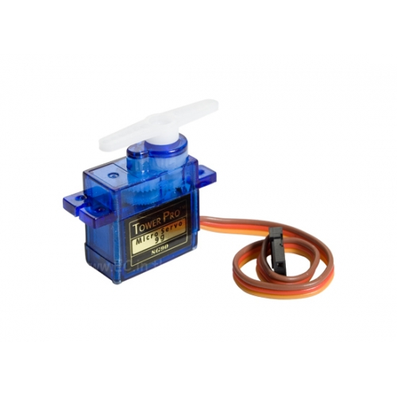
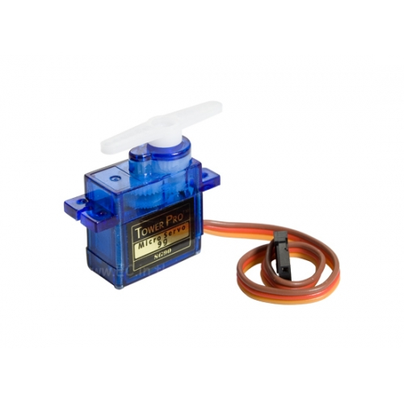

Gadget
Arduino UNO R4 WIFI

HC-SR04 Ultrasonic Sensor

SG90 Micro Servo


โปรเจ็กนี้เป็นการสร้างอุปกรณ์ถังขยะอัตโนมัติจาก Microcontroller เพื่อสามารถทิ้งขยะได้โดยไม่ต้องสัมผัสกับฝาถังขยะที่สกปรกและ
เต็มไปด้วยเชื้อโรคหรือแบคทีเรียมากมาย
โดยถังขยะจะเปิดออกเมื่อมีวัตถุหรือมือของผู้ใช้เข้าไปใกล้ๆ จาก Microcontroller รุ่น Arduino UNO R4 WIFI, Ultrasonic Sensor รุ่น HC-SR04 และ SG90 Micro Servo Motor
ตัวถังขยะเรานั้นจะมี Sensor ที่ได้ตั้งค่าขอบเขตการทำงานไว้คือระยะข้างหน้า 10 เซนติเมตร โดยที่หาก Sensor ตรวจจับได้ก็จะทำการเปิดฝาถังขยะขึ้นมา โดบจะเปิดไว้เป็นเวลาประมาณ 2 วินาที และจะมี Sensor อีกหนึ่งตัวซึ่งจะอยู่ใต้ฝาถังขยะเป็นตัวที่จะเอาไว้ระดับขยะในถังขยะ โดยวัดจากความห่างระหว่างขยะและตัว Sensor ซึ่งจะดูได้ผ่าน MQTT จากส่วนของ Waste level ถ้าเลขมีค่าน้อยก็จะหมายความว่าขยะนั้นมีระดับสูงจนใกล้เต็มถังแล้ว
เนื่องจากในโปรเจ็คนี้เราได้เลือกใช้ Servo ที่มีราคาไม่สูงมากจึงทำให้การใช้งานนั้นออกมาได้ไม่ค่อยดีเท่าไร เพราะไม่สามารถที่จะยกฝาพลาสติกขึ้นได้ และเนื่องด้วยเหตุผลทางเวลาเราจึงได้ เลือกที่จะเอาฝาถังขยะออกและแทนที่โดยฟิวเจอร์บอร์ดแทน เพราะว่ามีน้ำหนักที่เบากว่าและเหลือนำมาใช้ได้พอดี ผลลัพธ์ที่ได้คือในตอนนี้สามารถยกฝาถังขยะขึ้นได้แล้ว